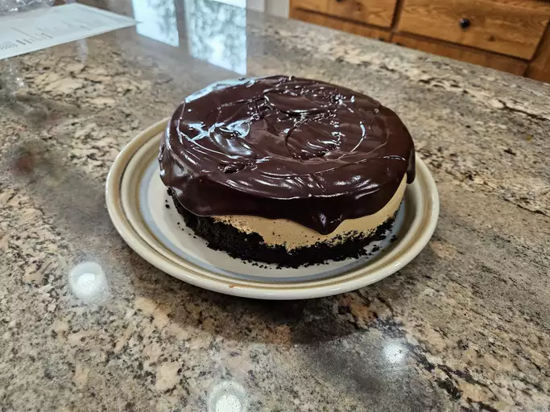

Baileys Cheesecake

This Baileys cheesecake has a mocha-flavored crust and a creamy filling, topped with a smooth chocolate ganache.
Ingredients
- 3 packages cream cheese, room temperature
- 3/4 cup sour cream, room temperature
- 3/4 cup granulated sugar
- 1 tablespoon instant espresso powder
- 1 teaspoon vanilla extract
- 3 large eggs, room temperature
Steps
- Preheat oven to 350°F (175°C). Grease an 8-inch springform pan and line with parchment on the bottom.
- Process cookies in a food processor until ground. Mix in melted butter. Press evenly into the pan. Bake for 10-12 minutes. Let cool slightly.
- Reduce oven temperature to 300°F (150°C). Wrap the pan with 2 layers of aluminum foil.
- Make the filling: Beat cream cheese until creamy. Add sour cream, sugar, espresso powder, vanilla, and eggs. Mix until combined.
- Pour filling onto cooled crust. Place the pan into a larger pan and pour water into the larger pan. Bake for 50-60 minutes.
- Turn off oven and leave door cracked open. Let cheesecake stand for 30 minutes. Chill for at least 3 hours.
- Make ganache: Heat cream and Baileys. Stir in espresso powder and chocolate chips. Pour over chilled cheesecake.
- Refrigerate until ganache is firm, about 30 minutes. Enjoy!